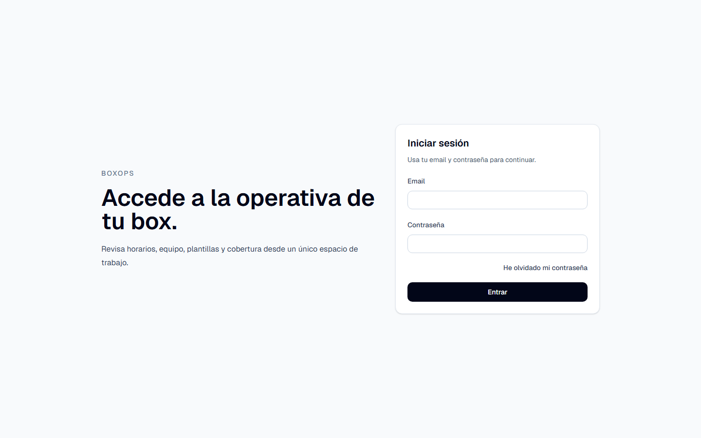
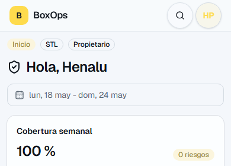
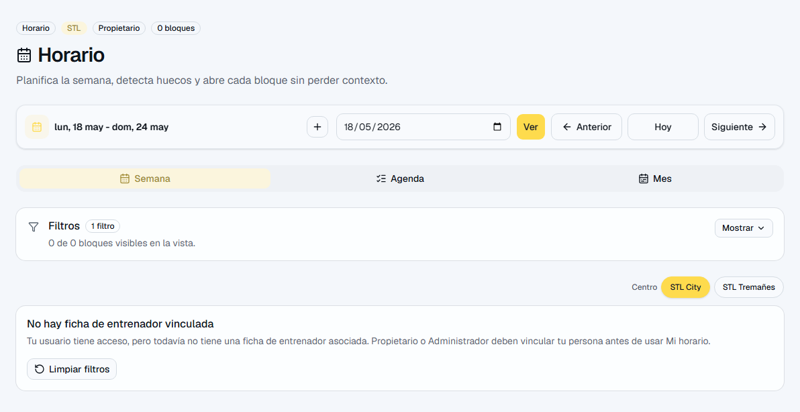
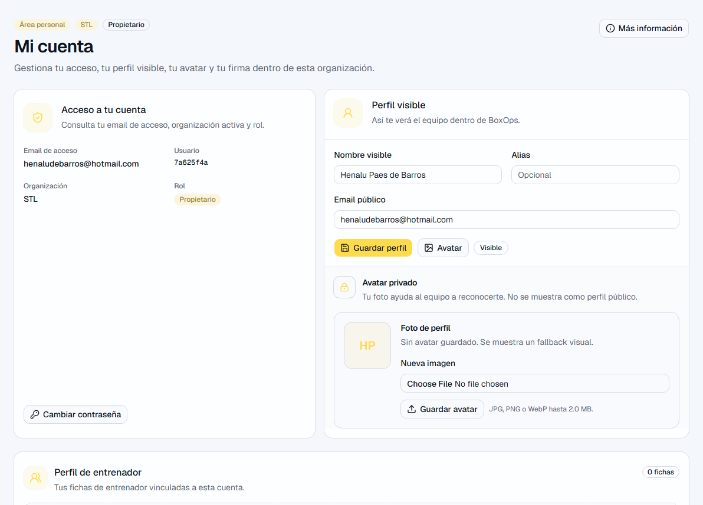

Capturas de referencia
Las imágenes ayudan a reconocer la pantalla y los elementos principales.





Consulta de horario, equipo, cuenta propia, fichaje, solicitudes y documentos permitidos.
Para quien necesita saber cuándo trabaja, registrar jornada y pedir cambios sin tocar la gestión del box.
| Pantalla | Ruta | Sirve para |
|---|---|---|
| Inicio | /app | Avisos propios y accesos rápidos. |
| Horario | /app/schedule | Semana visible y filtro Mi horario. |
| Equipo | /app/coaches | Consulta del equipo visible. |
| Mi fichaje | /app/time | Entrada, salida, semana y correcciones. |
| Ausencias | /app/absences | Peticiones propias si están activas. |
| Solicitudes | /app/requests | Cambios o cobertura cuando aplique. |
| Documentos | /app/documents | Documentos permitidos por acceso. |
| Mi cuenta | /app/account | Perfil, avatar y firma propia. |
Empieza por estos recorridos. Son los que más valor dan en el uso diario.
Estas zonas no siempre son la primera parada, pero ayudan a entender la operación completa.
| Función | Dónde está | Para qué sirve |
|---|---|---|
| Cobertura | /app/schedule | En Horario puedes ver si un bloque está cubierto, sin cubrir, insuficiente o en conflicto. |
| Solicitudes | /app/requests | Sirve para pedir o revisar cambios/coberturas propias cuando el flujo esté disponible para tu rol. |
| Ausencias | /app/absences | Permite consultar o crear peticiones propias de ausencia si la organización lo usa. |
| Mi fichaje | /app/time | Registra entrada/salida manual, revisa la semana y pide correcciones si algo no cuadra. |
| Mi cuenta y firma | /app/account | Permite actualizar tu perfil visible, avatar y firma interna propia. |
| Documentos | /app/documents | Muestra documentos disponibles para ti según permisos. |
| Equipo, centros y tipos | /app/more | Permiten consultar información operativa básica en modo lectura. |
| Plantillas | /app/templates | Ayudan a entender la estructura semanal base, aunque no puedas editarlas. |
Las imágenes ayudan a reconocer la pantalla y los elementos principales.



